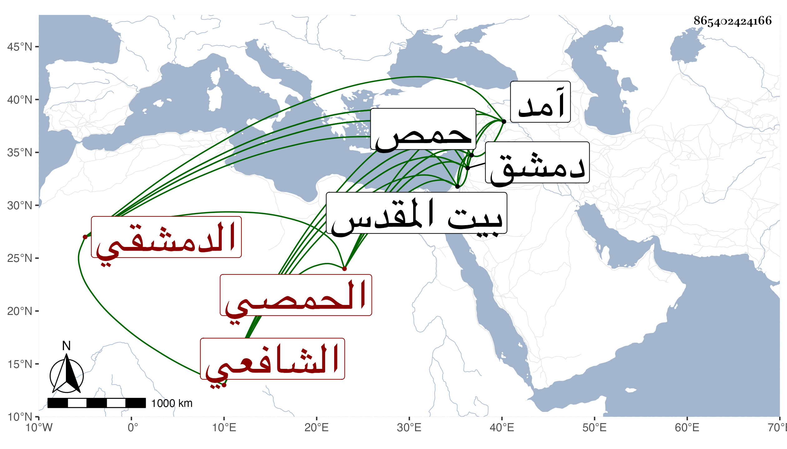

0902Sakhawi.DawLamic.ITO20230111-ara1.EIS1600.865402424166
Biography ID: 865402424166
846
محمد بن محمد بن إبرهيم بن محمد بن أيوب بن محمد الشمس بن البدر الحمصي ثم الدمشقي الشافعي سبط خطيب حمص ومدرسها الشمس السبكي وربما يقال له محمد بن محمد بن أحمد بن عبد المحسن أسقط محمد الثالث من نسبه ويعرف كسلفه بابن العصياتي . ولد في سنة سبع وثمانمائة بحمص ونشأ بها فحفظ المنهاج وجمع الجوامع وألفيتي الحديث والنحو والمغنى لابن هشام ، وعرض على جده لأمه المشار إليه واشتغل على أبيه وغيره ببلده وغيرها وتميز عن أبيه في العربية بحيث كان يقول لولده محمود الآتي إنه يحفظ لسيبوية خاصة خمسمائة شاهد . ولقي شيخنا في سنة آمد فقرأ عليه وأذن له وسأله عن ملك غسان وصاحب رومية فكتب له الجواب ، وتكلم على العامة في التفسير من القرطبي وغيره . وحج في سنة سبع وأربعين ، وزار بيت المقدس وناب في القضاء بدمشق عن التقي ابن قاضي شهبة بل ولي قضاء بلده في أيام الظاهر جقمق وقرر له على الجوالي راتبا فلم يتناوله بل استعفى عن القضاء بعد يسير ودرس بدمشق وغيرها ، وممن قرأ عليه التقي الأذرعي والبدر بن قاضي شهبة والنجم بن قاضي عجلون . مات في رابع عشري ذي القعدة سنة ثمان وخمسين بعد أن أجاز لي رحمه الله .
